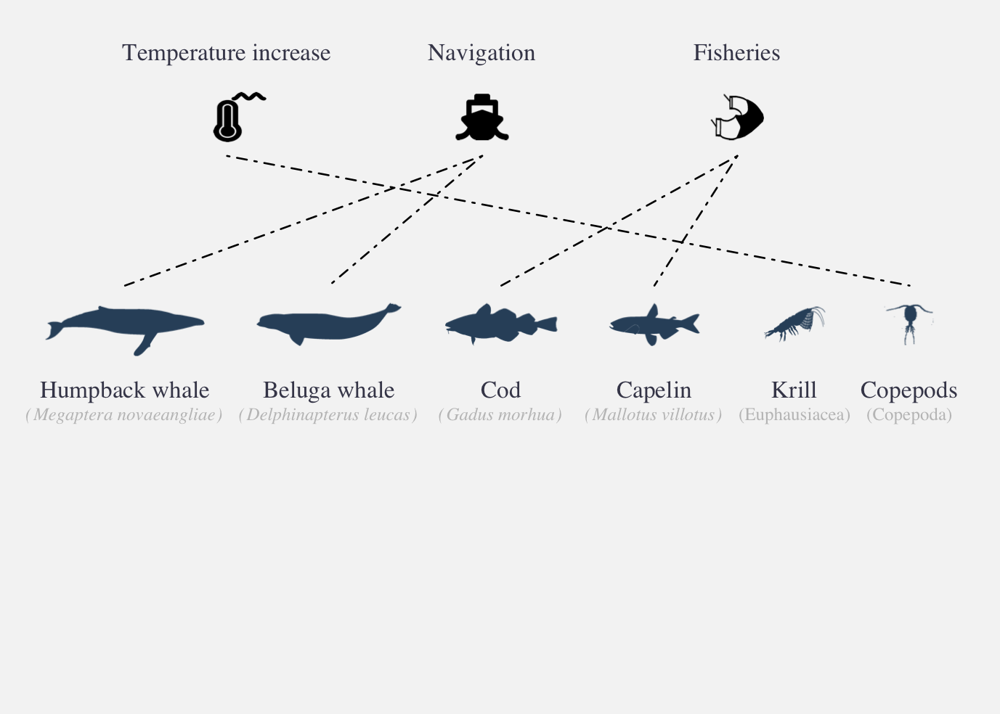
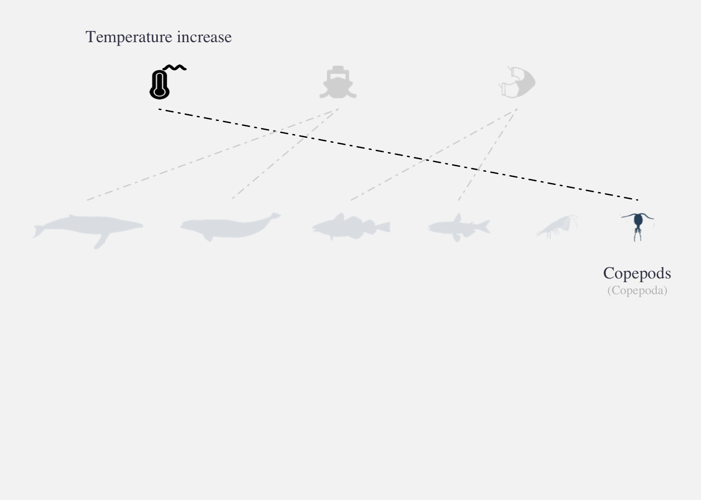
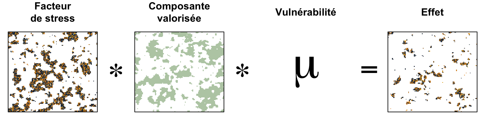
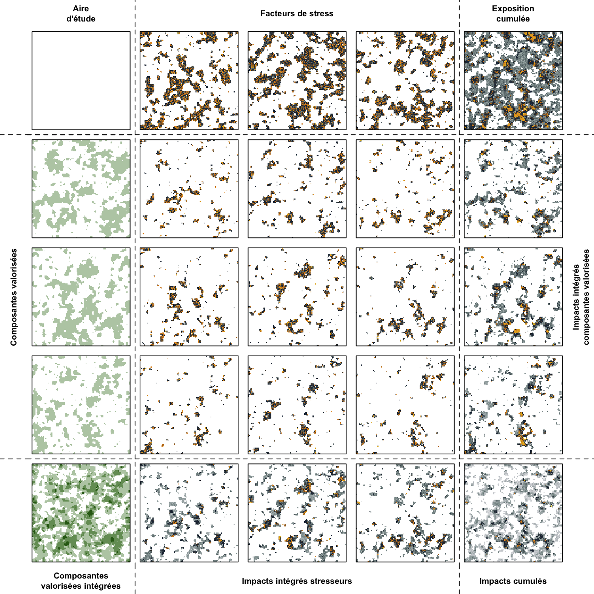
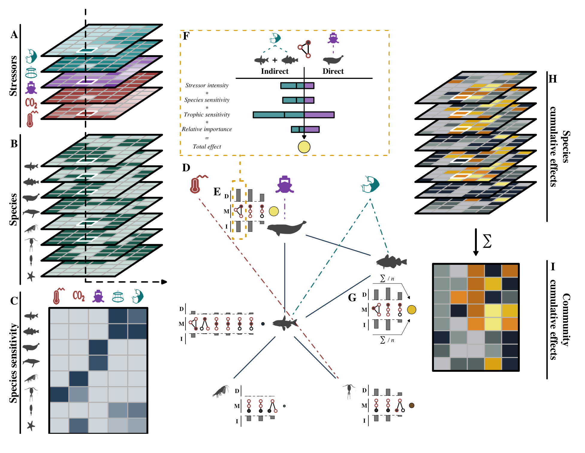

Cumulative effects assessments
Approach and operationalization
2026-04-16
Plan
- Cumulative effects assessments
- Completed assessments
- Operationalizing assessments
- Perspectives
- Q&A
Cumulative effects assessments
An ecosystem perspective
Cumulative effects: combined impacts of a project interacting with past, present, and future activities
Regional assessment: evaluates how multiple activities interact with ecosystems at a regional scale to understand broader patterns of impact
Ecosystem management: managing human activities based on ecosystem processes, using adaptive decisions to sustain structure, function, and resilience
Loi canadienne sur l’évaluation environnementale (1992); Christensen et al. (1996); Sinclair et al. (2017)
funnel
Approach

Halpern et al. 2008; Halpern et al. 2015; Halpern et al. 2019; Halpern et al. 2025
Approach

Halpern et al. 2008; Halpern et al. 2015; Halpern et al. 2019; Halpern et al. 2025
Approach

\[Effect = E_i * D_j * \mu_{i,j}\]
Halpern et al. 2008; Halpern et al. 2015; Halpern et al. 2019; Halpern et al. 2025
Approach

Halpern et al. 2008; Halpern et al. 2015; Halpern et al. 2019; Halpern et al. 2025
Approach

Beauchesne et al. 2025
Completed assessments
NCEA
St. Lawrence food webs
Scotian Shelf food webs
St. Lawrence maritime activities
St. Lawrence Regional Assessment
Common lesson
The hard part is not only completing an assessment
It is keeping scope, evidence, and pathways reusable
That is what makes assessments operational
Operationalizing assessments
What questions are answered?
The current state of the region
Risks to valued components
Pathways of effects
Management & mitigation priorities
Then what?
Single set of answers
Assessment quickly becomes outdated
Accumulated knowledge is scattered
What if?
Single set of answers
Can be updated and reused
Value grows as knowledge accumulates
How do we operationalize?
Knowledge management
Analytical capabilities
Decision-support tools
Automated workflows
Operationalizing assessments
Knowledge Management
Analytical capabilities
Decision-support tools

Why does this matter?
Shared regional memory
Updatable context
Reuse across assessments
Operational capacity
In a nutshell
Leverages the assessments
to build capacity beyond simple reporting
Perspectives
funnel2
Project-scale CEA
Apply regional context to freshwater projects
Assess incremental risk much faster
Support defensible scoping, mitigation, and follow-up
Project builder
AI-Assisted workflows
AI as a co-pilot for cumulative effects work
Define scope
- Draft valued components, stressors, pathways, and indicators
- Surface assumptions, missing information, and key questions
Gather evidence
- Find relevant reports, datasets, and monitoring sources
- Extract structured content into reusable assessment templates
Explore outputs
- Query maps, scenarios, and species risks in plain language
- Generate draft summaries to support discussion and reporting
Guardrails
- Human reviewed
- Source linked
- Versioned and auditable
- Used to support, not replace, expert judgment
inSileco
About Us

inSileco
How we support cumulative effects work
Knowledge systems
- Structure pathways, indicators, and evidence so they can be reused
- Turn one-off studies into living regional context
Analytics
- Build reproducible cumulative effects workflows and scenario analyses
- Connect scoping, modelling, and reporting in one system
Decision tools
- Deliver interfaces to explore risks, pathways, and management options
- Help teams interrogate results instead of reading static outputs
Automation
- Update data, rerun analyses, and support reporting at lower cost
- Add AI where it reduces friction without weakening defensibility
A well-structured assessment is not just an answer
It is an operational system for managing risk over time
Thank you!